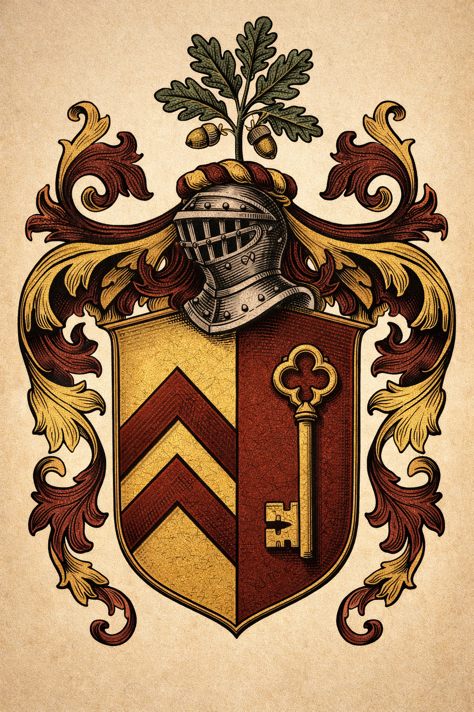

Being the Letters, Inventories, and Examinations of the Hale Family of Halecroft in the County of Worcester during the Reigns of Henry VIII, Edward VI, and Mary I.

Dere Father — I wryte to yow from Worcestre in grete hastye, for the matter of the pryorie landes requireth answere before the sessyons do meete. The agente of the Lorde Cromwelle hathe been agayne at the countie assize inquyringe whiche landes might be disposed of shoulde the Kynges neede require itte, and I do thinke that neede is not farre distant.
I have spoken with Master Alderton who is of good counsaile and who sayth plaine that anie man of substance in this countie who doth not enquire of the priorie landes when they come to sale will regret itte after. The landes at the easte mill and the upper woode are those which touch our own holdinges, and you will recalle Father that Grandfather saide to us both that if those landes ever came to privathe handes they shoulde be our handes, for they were ours by use these fortie yeres and more.
I woulde knowe your mynde. I have twelve poundes of mine own, which is not sufficient, but Master Alderton saythe there are men in this citie who will lend at reasonable use to a freeholder of good credit. I am told I am such a man. I confesse I did not knowe it till he sayde so.
Tell my Mother I am in health. Tell her also the inne here is tolerable but the bread is not as good as hers and I shall be gladde to come home.
The Visitors noted that William Hale gave accurate testimony. His title to the lands was not challenged. He was cautioned to attend divine service regularly, to which he replied that he had done so every week of his life and intended to continue. He was dismissed. The Visitors noted in their record: a careful man and an honest one. Not the kind of honest that is a performance. The actual kind.
THE MATTER IS PLAYNE. The Scriptures are in Englishe now and every man that can read may read them. What then shall hinder any Englishman from knowing what God hath said? Only this: that men of learning have for so longe told men of no learning what to thinke, that the habit of thinking for oneself seemeth strange and perhapps dangerous.
But God did not speak Latin when He spoke to the heart. He did not speak in the tongue of Rome when He walked upon the water. He spoke as men speak: plainly, meaning what He said, to those who were prepared to listen.
The man who reads his Bible in the English tongue and acts upon what he reads therein — this man, though he hold but five acres, is nearer to God than the cardinal in his palace who hath never read the text but only heard it interpreted by those with an interest in the interpretation.
William Hale of Halecroft — His Journal
Written the night before his examination by the bishop's visitors · The full entry · Found folded inside the back cover of a psalter in English, acquired at auction 1883
William Hale, his journal — being an account I do not intend to keepe but finde I must set down, this Midsummer Eve, the second yere of the reigne of Queene Marie.
I appeer before the bisshop's visitors in the morninge. I have been tolde what they wishe to knowe and I have been thinking, these past two wekes, about how to answere it. I am now goinge to wryte it downe, because writinge it downe is how I knowe whether I believe it, which is a thing my son William tells me is my manner and which I suppoze is true.
The question they will aske is whether I did purchase the priorie land properlie. The answere is: yes. I haue the indenture. I will shewe it them.
The question behinde that question is whether I profited improperlie from the dissolution of a religious howse. The answere to this question I have been turninge over for a fortnighte.
The priorie was there before my father was born and his father. My grandfather's grandfather was in wardschipe there after the pestilence and the prior kept him and taught him his letters and gave him back his landes. That is a debt of the kinde that cannot be repaid with monie. It can only be repaid by acknowledginge that it existed, which is what I am doinge now, privately, in this journal, the night before I stand before men who do not know it existed and who are not interested in it.
I signed the oath in 1534 because the alternative was not an alternative I examined too closely, there being a man in More's position to instructe me about alternatives. I purchased the priorie land in 1545 because it was lawfullie for sale and I had the monie and it was good land. I have attended my church through three religions now — the old, the new, and the new againe — and I have received the sacrament as it was offered to me in each, which is to say I have been fed with the same feede in three different vessels and I believe God understands the difference between the vessel and the feede even if the bisshop's visitors do not.
What I think, privatlie, which is the only place I thinke such thinges: I think the Kinge was rong in his theologie and right in his practise. I think a church governed from Rome is a church that serves itself before it serves its people. I also think a kinge who kills men for agreeinge with him is a kinge who should be watched.
But these are thinges for a man's own head and not for a letter or a deposition or a journal that his son mighte find one day. I shall stoppe.
The indenture is in the deed-box. The deed-box is locked. I have the key. The key is on the chain with my father's key and his father's key, which I have worn since I was twentie-two yeeres old when my father died and which I will weare until I die and then my son will weare them. There is something in the weighte of three keys on a chain that is its own kind of answer to the question of sufficiency. I do not know quite what it is. I find I do not need to know.
God save the Queene. God save also those of us who have watched England change its religion foure times in one lifetime and who are still standinge.
William Hale, his marke. Halecroft, Midsummer Eve, 1555.
A legal document on cream vellum, folded twice, with an indented — jagged — cut along the top edge. This is the characteristic feature of an indenture: one half kept by each party, the irregular cut proving the two halves match. This is William Hale's half.
The vellum is slightly stained at the fold lines. At the bottom, two wax seal remnants — one has lost its impression entirely; one retains a faint merchant's mark. The document is approximately 40cm × 25cm when unfolded. The text is in dense legal Latin, the hand of a professional scribe: lawful lease, lawful owner, lawful price. Twelve acres of former priory land for four pounds.
Beside William Hale's half, a second document — smaller, in a different hand. The bishop's visitors' record of their examination of William Hale, 22 June 1555. Their conclusion, in the formal Latin of ecclesiastical process:
Examinatus est Willielmus Hale de Halecroft super acquisitione terrarum prioratus — nos invenimus causam non esse procedendam.
We find no cause for further proceeding. The same three words did two different jobs ten years apart: the indenture used them to close a purchase; the examiner's record used them to close an inquiry.